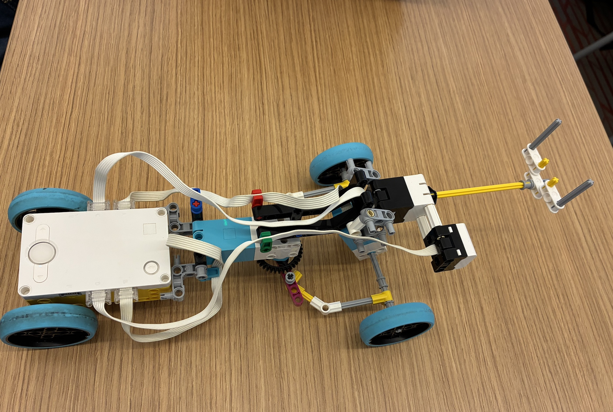

The biomimicry I used were insects, specifically their antennas and their courtship and how insects would perform mating dances. I made my robot able to replicate an antenna by adding a force sensor, and then programming it so that when it's pressed, it moves around that object. In addition, I implemented mating into my robot. Since the LEGO kits do not have chemical pheromone detectors, instead I adopted for a color sensor. When it comes in contact with something blue, it will do a little courtship dance. Here's the link to a demonstration: https://www.youtube.com/watch?v=jcuHTI_9biA